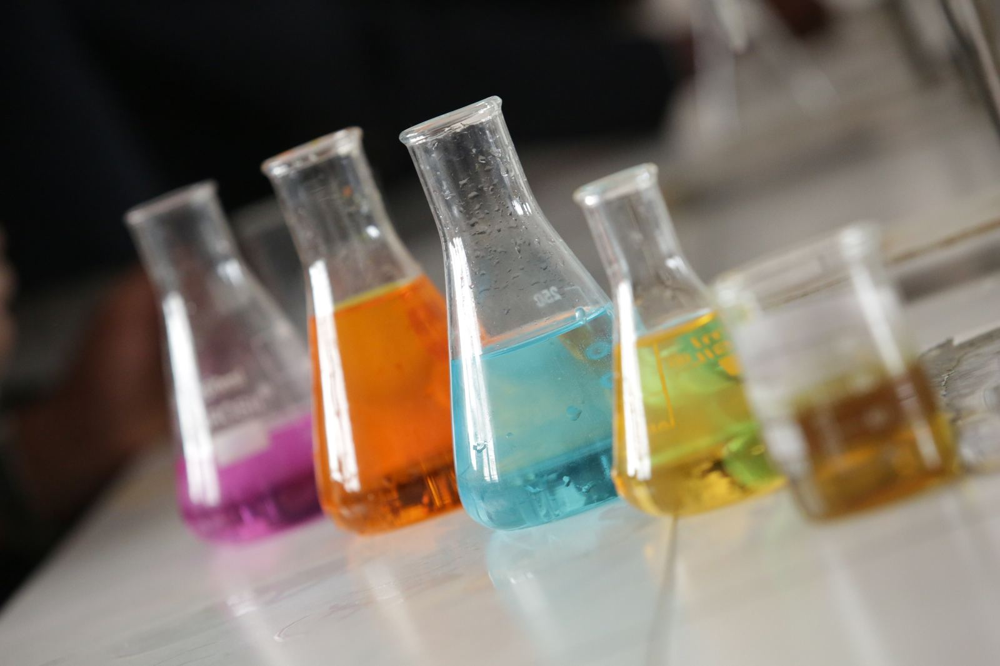
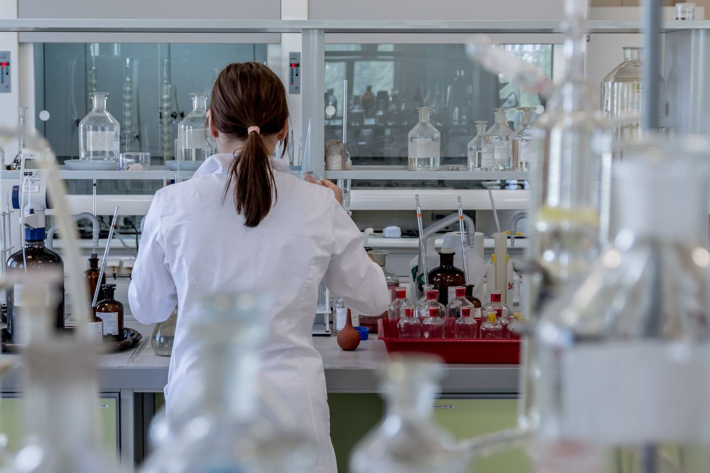
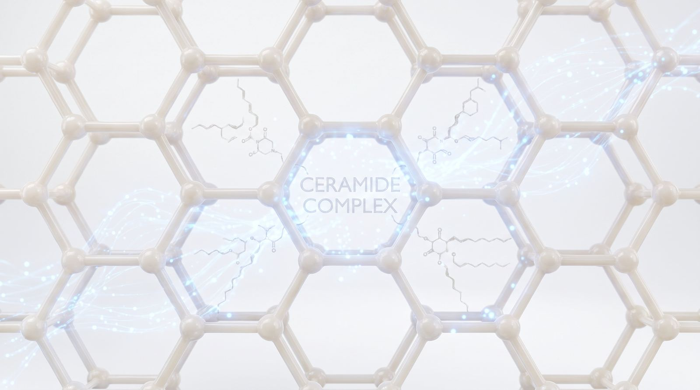
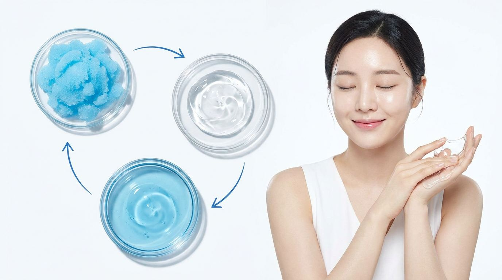
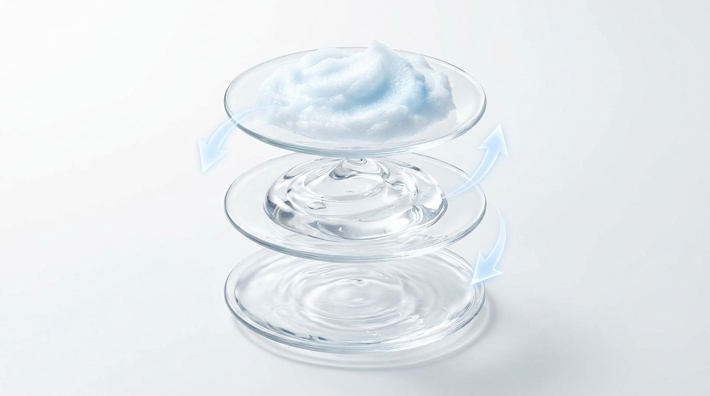

퍼스트 디유 에센스
첫 발효 원액 98% · 피부 장벽의 시작
62,000원
JH SEOUL · SINCE THE FIRST DEW
전통 발효 방식으로 60일간 숙성한 원료 하나로,
군더더기 없는 진짜 피부 회복을 만듭니다.
JH Seoul은 스무 가지 성분보다 하나의 발효 원액을 선택합니다. 서울 인근에서 자란 곡물과 식물을 전통 옹기에서 60일 이상 저온 발효시켜, 피부가 스스로 받아들일 수 있는 가장 작은 분자 단위로 만듭니다.
화려한 성분표 대신, 하루하루 달라지는 피부 결로 증명합니다.



피부 장벽을 이루는 지질 성분을 발효 공정으로 잘게 쪼개어, 세포 사이사이까지 스며드는 저분자 세라마이드로 재구성했습니다. 바르는 순간이 아니라, 흡수된 이후의 24시간을 설계합니다.
원료가 제품이 되기까지, 시간만이 할 수 있는 일이 있습니다.

경기 인근 청정 농가에서 그 해 가장 좋은 곡물과 식물을 손으로 골라냅니다.
전통 옹기 안에서 60일 이상, 미생물이 원료를 저분자 성분으로 천천히 분해합니다.
18도 이하의 저온에서 불필요한 잔여물을 걸러내고 순도 높은 발효 원액만 남깁니다.
빛과 공기를 차단하는 유리 용기에 담아, 처음 그 활성을 그대로 전합니다.
첫 발효 원액 98% · 피부 장벽의 시작
62,000원
발효 원액 + 옹기 진액 · 깊은 밤 보습
78,000원
가벼운 발효수 · 첫 이슬 같은 산뜻함
45,000원
저온 압착 씨앗유 · 탄력 마무리
54,000원

“성분표를 보지 않고도 순한 걸 느낄 수 있었어요. 3주 만에 화장이 뜨지 않게 됐습니다.”
— 이O진, 34세
“민감성 피부라 늘 조심스러웠는데, 트러블 없이 쓸 수 있는 몇 안 되는 에센스예요.”
— 박O현, 29세
“향이 과하지 않아서 좋아요. 발효 냄새인데도 은은하고 편안합니다.”
— 최O아, 41세